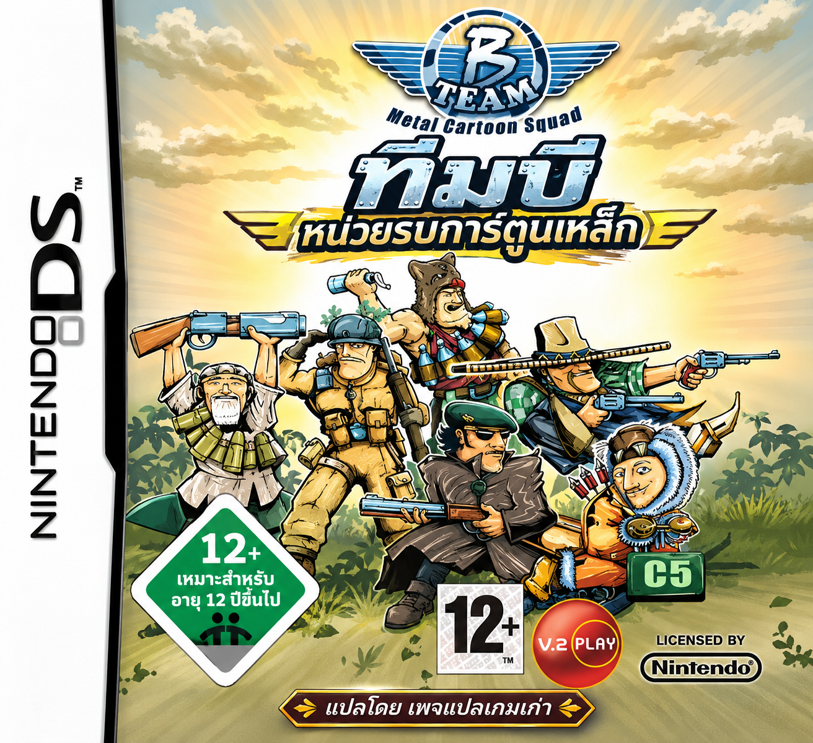

B Team - Metal Cartoon Squad
Nintendo DS · ภาษาไทย v1.0 · Europe
แปลโดยเพจแปลเกมเก่า
เมื่อกองกำลังศัตรูยึดเมืองและจับทหารฝ่ายเราไป ทีมบีต้องบุกฝ่าแนวกั้นไปช่วยเพื่อนร่วมหน่วย จากเมืองกลางทะเลทรายไปจนถึงป่าลึก แต่ละภารกิจมีทั้งชิงรถหลบหนี ทำลายฐาน และปะทะรถถังยักษ์ ในเกมแอ็กชันลายเส้นการ์ตูนบน Nintendo DS
แพตช์ภาษาไทย v1.0 ผ่านหน้าเว็บสำหรับ ROM Europe CB3P revision 0 · แปลและใส่กลับ 461 รายการที่ดึงได้ พร้อมธงไทย เมนูและแป้นตั้งชื่อไทย · ทดสอบตั้งชื่อ เซฟและโหลดโปรไฟล์ และเข้าเล่นภารกิจแรกใน melonDS · แป้นไทยมีชุดสระและวรรณยุกต์สำเร็จรูปบางชุด ด่านหลังและฉากจบยังไม่ได้ทดสอบ
3264 - B Team - Metal Cartoon Squad (E)(Independent).nds จาก RetroGameTalk รหัส CB3P revision 0 ขนาด 33,554,432 ไบต์ เว็บตรวจ SHA-256 ก่อนสร้างไฟล์ภาษาไทย
- เลือกไฟล์
3264 - B Team - Metal Cartoon Squad (E)(Independent).ndsต้นฉบับ - กด “สร้าง ROM ภาษาไทย”
- ดาวน์โหลดไฟล์ .nds ที่สร้างแล้ว เปิดใน melonDS แล้วเลือก ไทย คู่กับธงไทย
ไฟล์ประมวลผลในเบราว์เซอร์ของคุณโดยไม่อัปโหลด ROM
กำลังโหลดข้อมูลแพตช์…
กรุณาเปิดหน้าเว็บผ่าน HTTPS เพื่อใช้ระบบแพตช์
ดาวน์โหลด ROM ภาษาไทยค่า SHA-256 สำหรับตรวจสอบ ROM
ต้นฉบับ Europe4d5972a38f3550f2207475c653c669051919899b0f374e1edc7ecb7b91b96528
ไฟล์ภาษาไทยfc5a3a7c24a49d8eb3201f1007c588b188b36be92af0a5dfcde3e03104791aed